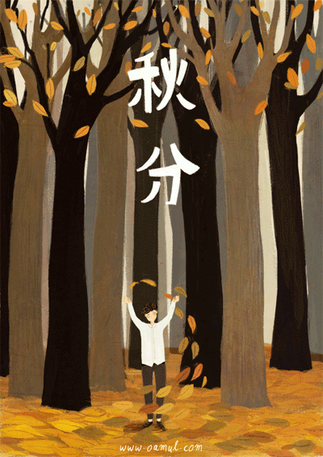

二十四节气
二十四节气，于中国先秦时期就已经订立、到汉代完全确立的用来指导农事的补充历法，是通过观察太阳周年运动，认知一年中时令、气候、物候等方面变化规律所形成的知识体系。它把太阳周年运动轨迹划分为24等份，每一等份为一个节气，始于立春，终于大寒，周而复始，既是历代官府颁布的时间准绳，也是指导农业生产的指南针，日常生活中人们预知冷暖雪雨的指南针，是中华民族劳动人民长期经验的积累成果和智慧的结晶。


- 02月03-05日/立春
- 02月18-20日/雨水
- 03月05-07日/惊蛰
- 03月20-22日/春分
- 04月04-06日/清明
- 04月19-21日/谷雨
- 05月05-07日/立夏
- 05月20-22日/小满
- 06月05-07日/芒种
- 06月21-22日/夏至
- 07月06-08日/小暑
- 07月22-24日/大暑
- 08月07-09日/立秋
- 08月22-24日/处暑
- 09月07-09日/白露
- 09月22-24日/秋分
- 10月08-09日/寒露
- 10月23-24日/霜降
- 11月07-08日/立冬
- 11月22-23日/小雪
- 12月06-08日/大雪
- 12月21-23日/冬至
- 01月05-07日/小寒
- 01月20-21日/大寒

- 
《立春》
东风带雨逐西风，
大地阳和暖气生。
万物苏萌山水醒，
农家岁首又谋耕。
《雨水》
南湿北冷两交锋，
乍暖还寒斗雨风。
一夜返青千里麦，
万山润遍动无声。
《惊蛰》
一声霹雳醒蛇虫，
几阵潇潇染绿红。
九九江南风送暖，
融融翠野启春耕。
《春分》
东风带雨逐西风，
大地阳和暖气生。
万物苏萌山水醒，
农家岁首又谋耕。
《清明》
风雷掣电闹中春，
桃柳着装日日新。
赤道金阳一照面，
白天黑夜两均分
《谷雨》
雨频霜断气清和，
柳绿茶香燕弄梭。
布谷啼播春暮日，
栽插种管事诸多。
《立夏》
南国似暑北国春，
绿秀江淮万木荫。
时病时虫人撒药，
忽寒忽热药搪人。
《小满》
江南沃野过插秧，
江北麦稃便灌浆。
西子湖边人好客，
茶商脚走款丝商。
《芒种》
艳阳辣辣卸衣装，
梅雨潇潇涨柳塘。
南岭四邻禾壮日，
大江两岸麦收忙。
《夏至》
火轮渐近暑徘徊，
一夜生阴夏九来。
知了不知耕种苦，
卧闲枝上唱开怀。
《小暑》
地煮天蒸望雨风，
偶得雷暴半圆虹。
旱南涝北分天壤，
总有荷塘色味同。
《大暑》
日盛三伏暑气熏，
坐闲两厌是蝇蚊。
纵逢战鼓云中起，
箭射荷塘若洒金。
《立秋》
一叶梧桐一报秋，
稻花田里话丰收。
虽非盛夏还伏虎，
更有寒蝉唱不休。
《处暑》
一度暑出处暑时，
秋风送爽已觉迟。
日移南径斜晖里，
割稻陌阡车马驰。
《白露》
衰荷滚玉闪晶光，
一夜西风一夜凉。
雁阵声声蚊欲静，
枣红点点桂流香。
《秋分》
暑退秋澄气转凉，
日光夜色两均长。
银棉金稻千重秀，
丹桂小菊万径香。
《寒露》
天高昼热夜来凉，
草木萧疏梧落黄。
日享菊香播小麦，
夜喝梨贝养脾肠。
《霜降》
一朝秋暮露成霜，
几份凝结几份阳。
荷败千池萧瑟岸，
棉白万顷采收忙。
《立冬》
北风往复几寒凉，
疏木摇空半绿黄。
遍野修堤防旱涝，
万家晒物作冬藏。
《小雪》
太行初雪带寒风，
一路凋零下赣中。
菊萎东篱梅暗动，
方知大地转阳升。
《大雪》
万山凋敝黯无华，
四面嘶鸣晃树杈。
白雪欲求吟咏句，
穿枝掠院演梅花。
《冬至》
西北风袭百草衰，
几番寒起一阳来。
白天最是时光短，
却见金梅竞艳开。
《小寒》
冰封万里雪皑皑，
径堵千重港口塞。
昨日剪桃修几树，
忽如一夜李花开。
《大寒》
蜡树银山炫皎光，
朔风独啸静三江。
老农犹喜高天雪，
况有来年麦果香。